01 · LP 做市
看这一章 →
没拿空投也能吃满新币 LP 收益的三条件
热门项目、先上 DEX、有盘前期货锚定价格——满足这三条，靠 LP 对冲一样赚高收益。
与其赌空投或追高土狗，不如在开盘前盯紧链上预分配地址并结合盘前价格建仓对冲做市。
- 只选有热度且流动性充沛的热门新币池
- TGE 前先在链上核对代币预分配地址异动
- 利用盘前期货或合约锁定价格风险，吃手续费与波动
深耕集中流动性做市、Perp DEX 价差套利与自动化网格脚本的一线实战玩家，多次直接开源自己实盘跑通的监控与网格系统。完整收录 466 篇 X 本人原创推文（按 6 大板块、16 个自然小节排好，原汁原味）与 119 张本地配图。
热门项目、先上 DEX、有盘前期货锚定价格——满足这三条，靠 LP 对冲一样赚高收益。
与其赌空投或追高土狗，不如在开盘前盯紧链上预分配地址并结合盘前价格建仓对冲做市。
单独跑网格容易吃单边亏，融合剥头皮与马丁变体，再加上定期健康检查保证订单持仓一致。
实盘自动化系统最大的敌人不是策略不够炫，而是网络抖动导致的仓位不同步与单边爆仓。
新平台刚开 Spot 或 Perps 时定价最粗糙、利润最肥；套利核心是解决滑点和资金费率差。
当老场子卷成红海，第一时间接入 Hyperliquid、Polymarket Perps 等新市场才能抢到无内卷利润。
一边看电影一边用 AI 写完币安现货、合约、资金费率、成交量与期现价差异动报警。
把人工盯盘变成机器 24 小时雷达报警，再结合低延迟架构指南把好想法快速落地成稳定程序。
今天看见一个人套利爆仓了 500WU；过去一年做套利只是因为没大行情，我从不把自己锁死在单一打法。
套利一旦加了不当杠杆或忽略交易所强平与流动性断层，同样会亏光本金；活下来才有切换赛道的资格。
我看叙事能力不行，分不清哪个土狗能拿，所以我用 LP 配合分钟和秒级 K 线做进出波段。
承认自己的能力边界比硬学别人更重要：避开自己看不懂的纯叙事赌局，用熟悉的工具赚确定性的钱。
不做无脑拿住赌十倍，而是用集中流动性（LP）在波动区间里稳吃手续费与盘口差价。拆解 Meteora 与 Uniswap v3 的区间设计、撤池时机与收益权衡。
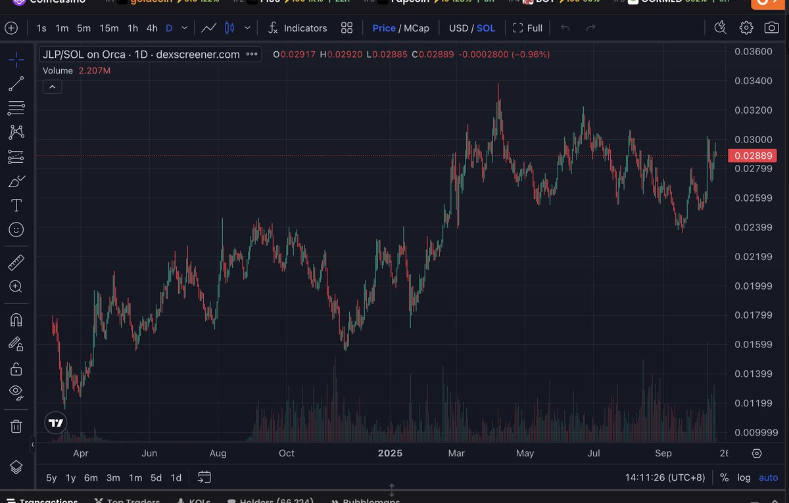
热门新币先上 DEX 且有盘前期货价格锚定时，怎么在开盘前盯住链上预分配地址、利用盘前合约对冲无常损失，把空投红利变成低风险 LP 收益。
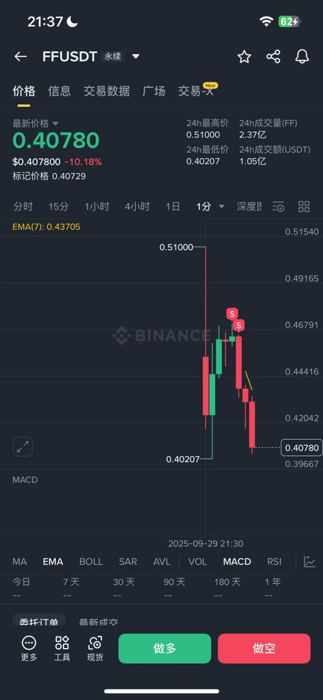
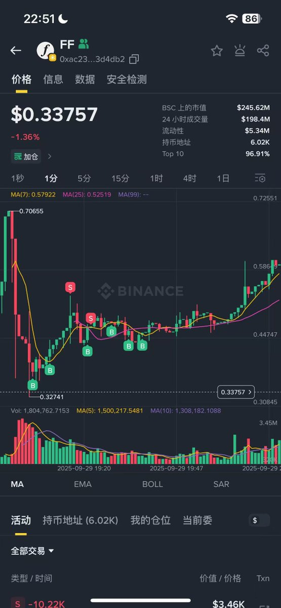
CJ 坦言自己不擅长看土狗叙事，所以换了一条确定性更高的路：用 LP 配合分钟级甚至秒级 K 线节奏做波段，看清什么时候进池、什么时候撤离。
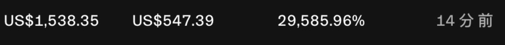
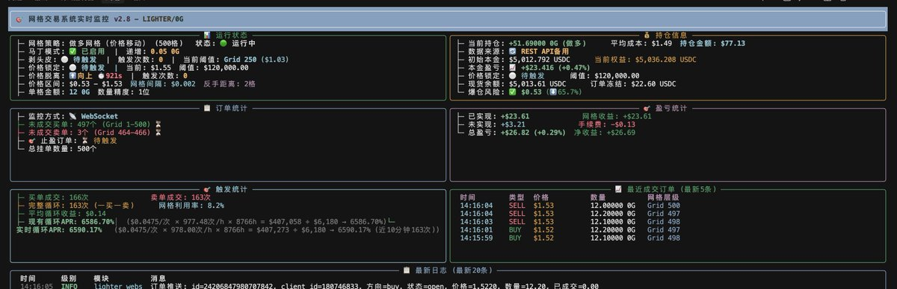
复盘 Hyperliquid 上线大量 Spot 代币后出现的现货/合约价差机会，以及跨交易所价差与资金费率差套利中如何啃下“滑点”这块硬骨头。
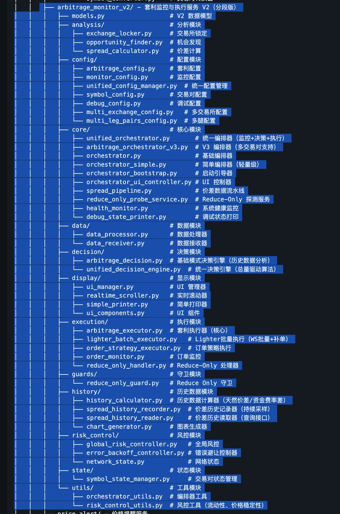
纯跑网格容易单边被套，CJ 把网格、剥头皮和马丁做成变体融合版，并加入定期健康检查维持订单和持仓一致，多账号跑不同代币稳定吃收益。
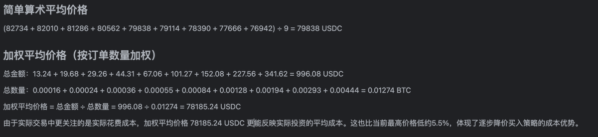
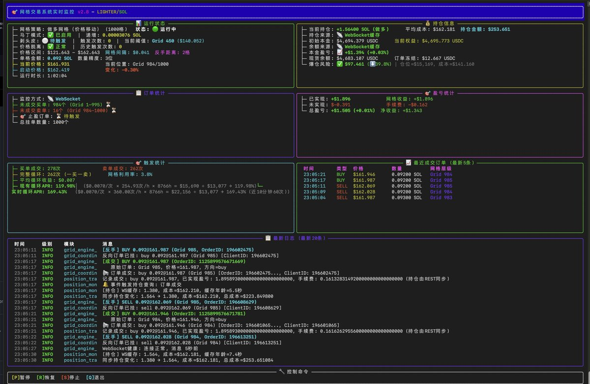
老赛道卷到没利润就第一时间切入新场子——每当 Polymarket 开 Perps 或新衍生品 DEX 上线，早期定价效率低、滑点与费率红利最丰厚。
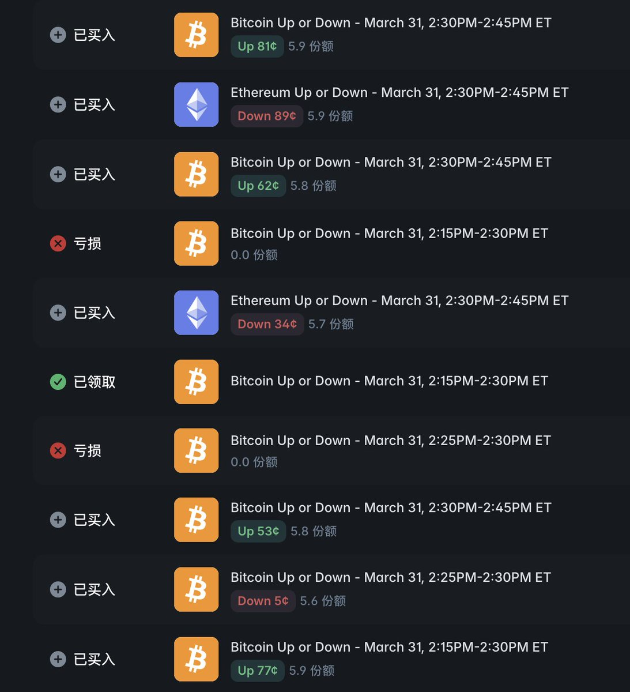
不懂深度底层开发也能拥有专业级雷达。CJ 示范如何用 AI 一个下午写出币安现货价、合约价、资金费率、成交量与期现价差全维度异动报警脚本。
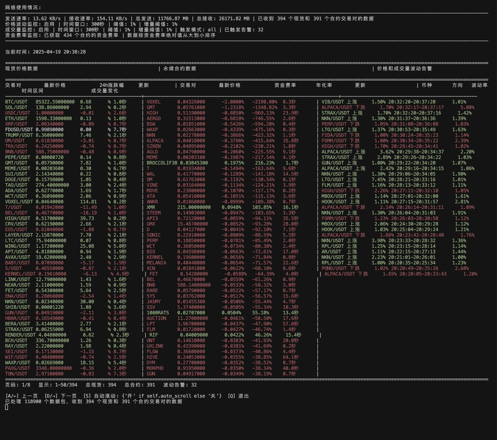
公开自己和 AI 打磨的《高频量化套利架构与低延迟开发指南》，并拆解多显示器对应多台独立主机分别跑套利、打狗、脚本开发的工程实战环境。
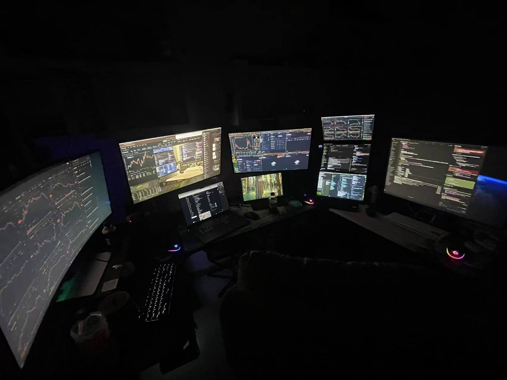
汇总 CJ 多次在实盘跑稳两周以上后免费开源的网格、马丁、Meteora 做市与监控一体化系统，附带界面优化思路与版本升级细节。
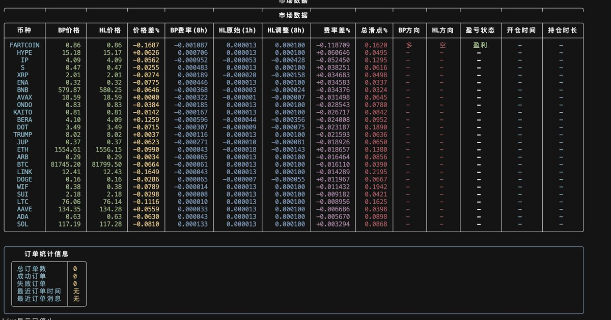
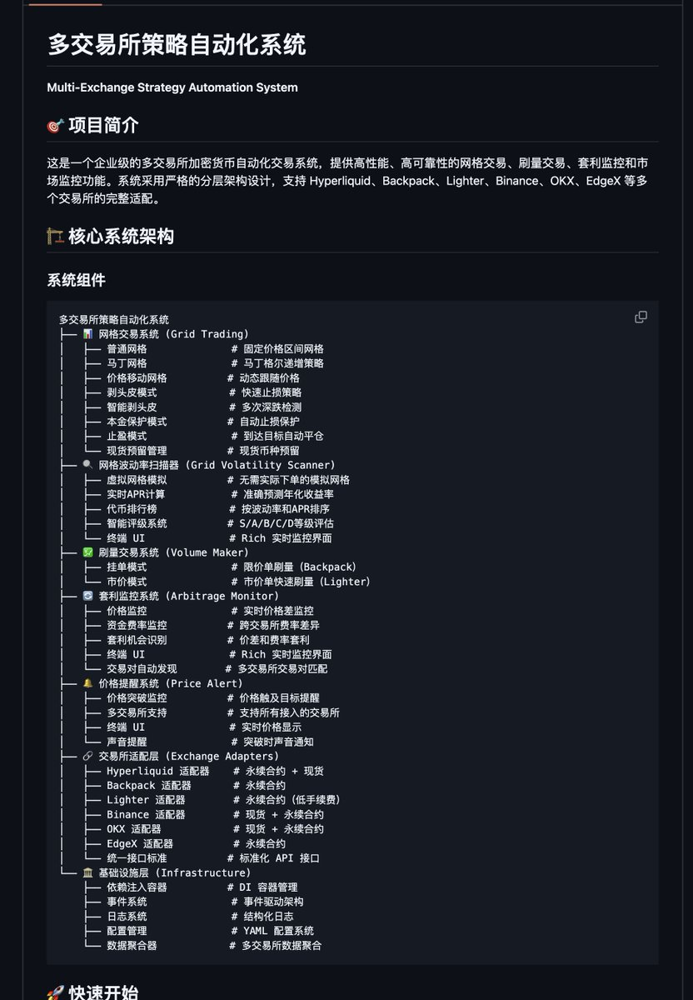
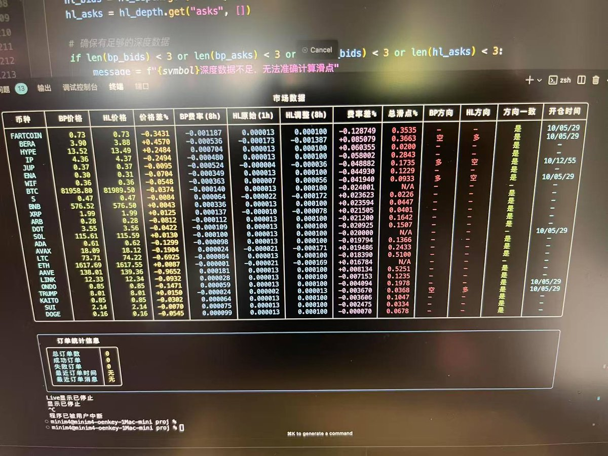
套利只是市场没大行情时的现金流底盘。当加密股（COIN、HOOD、CRCL）或大级别方向机会出现时，CJ 同样会跨市场布局现货与正股。
CJ 明确表示不喜欢被贴死“套利佬”标签：过去一年主做 Perp 套利只是因为行业缺少大趋势，真正的核心能力是随时切入当下赔率最高的战场。
套利绝不等于零风险。从旁观别人套利爆仓 500WU 的血淋淋案例，到自己在脚本里加仓位健康检查与防单边机制，时刻把活下去放在收益前面。
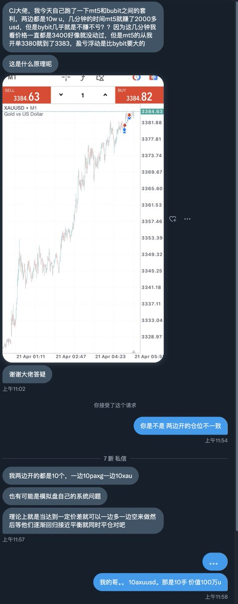
经常在加密与美股多个市场间调度资金，通道磨损和安全至关重要。实测分享 Backpack 法币电汇 0 磨损等跨境出入金实操方案。
工具和脚本开源出来之后，愿意自己调参数、跑测试的人才能赚到钱。记录 CJ 对市场内卷、独立思考与持续折腾的坦率感悟。
记录 CJ 在实盘调试脚本、多号运行网格和捕捉突发波动期间的一线实时反馈。
汇总 CJ 日常与社区老铁的技术答疑、圈内观点交流及轻松生活记录。